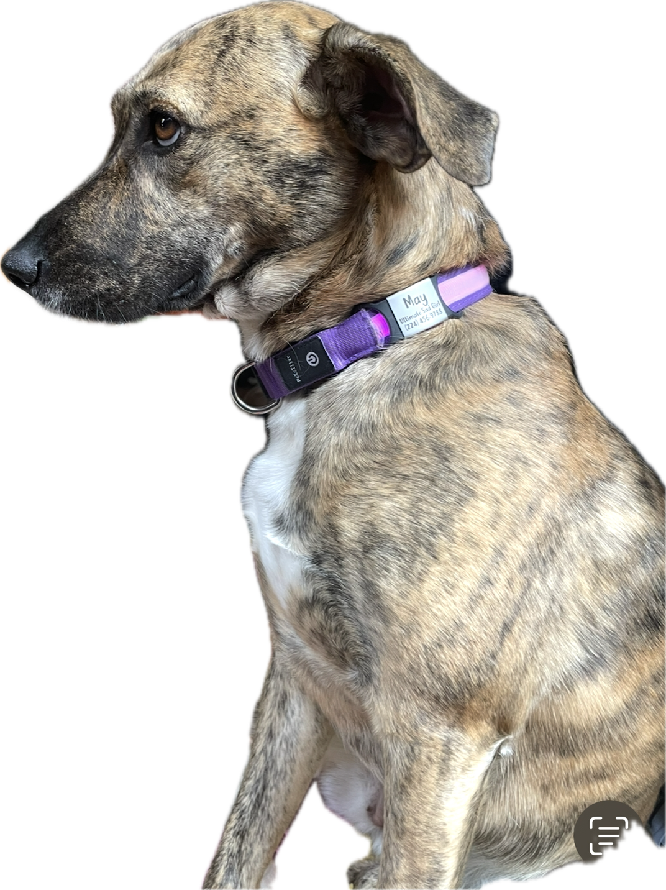
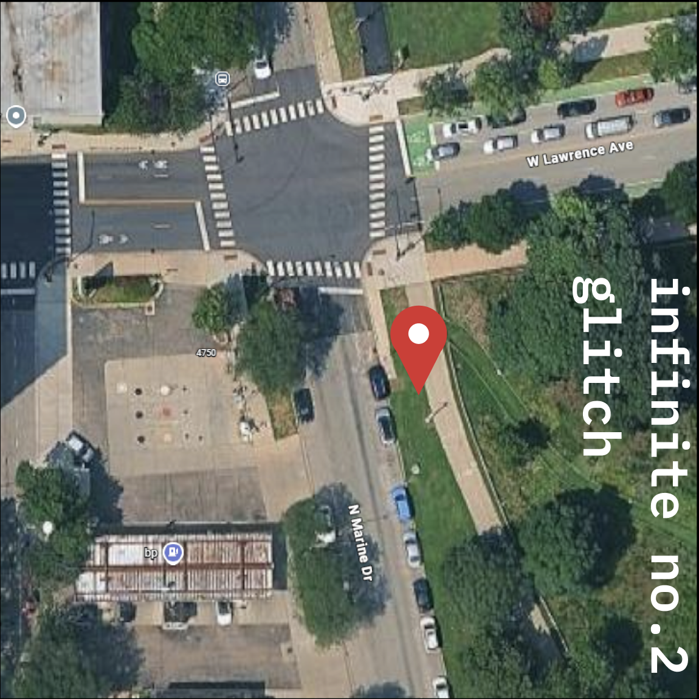

dogsitter's guide to sad girl may
about sad girl may


tips & tricks
“the point of life is suffering.”
— sad girl may's tip for you


sometimes, may will need to go no.2, but can't seem to make it happen. there's some strange magic on this pinned corner nearby where she will go no.2 every time with 92% precision.
for breakfast, may gets 1.5 cups of dry food. after her morning walk, she'll get her 1 dental bone of the day.
in the evening, may gets 1 cup of dry food for dinner.
after successful walks, may can perform for her treats: she knows sit, lay down, shake, and spin.
may's a grazer. she likely won't eat her food when it's served immediately. let her eat throughout the day if she wants.
sad girl may faq
Q: how many cups of coffee is may allowed to have each day?
A: you must cut her off at 5 cups, no more.Q: your dog slapped me after i stopped petting her for a little bit. is she allowed to do that?
A: yes, she is allowed to hit. all dogsitters sign a waiver that dictates that may is indeed allowed to hit.Q: does she have take a preventative for fleas, ticks, and heartworm?
A: yes, she takes credelio quattro on the first of every month.Q: what music is may allowed to listen to?
A: she can listen to everything, because i think it's important for her cultural development and expansion of knowledge. HOWEVER, she cannot listen to experimental 90's krautrock. please do NOT play Neu! for may.Q: does may have a criminal record?
A: legally, i'm not supposed to say.Q: may is talking to me. what is she saying?
A: it has been my lifelong mission to figure that out. she's a hound-mix so she just loves to babble. just babble back to her.